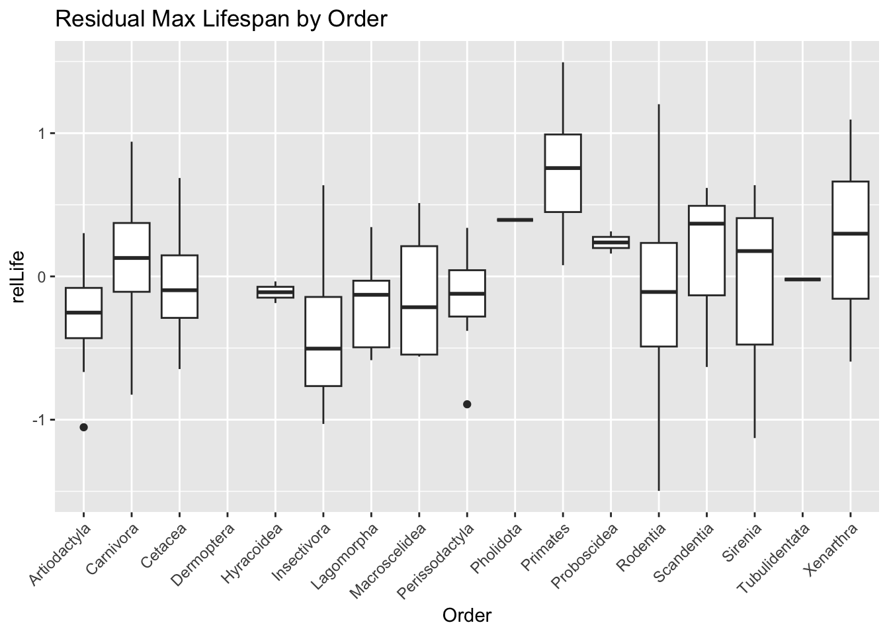
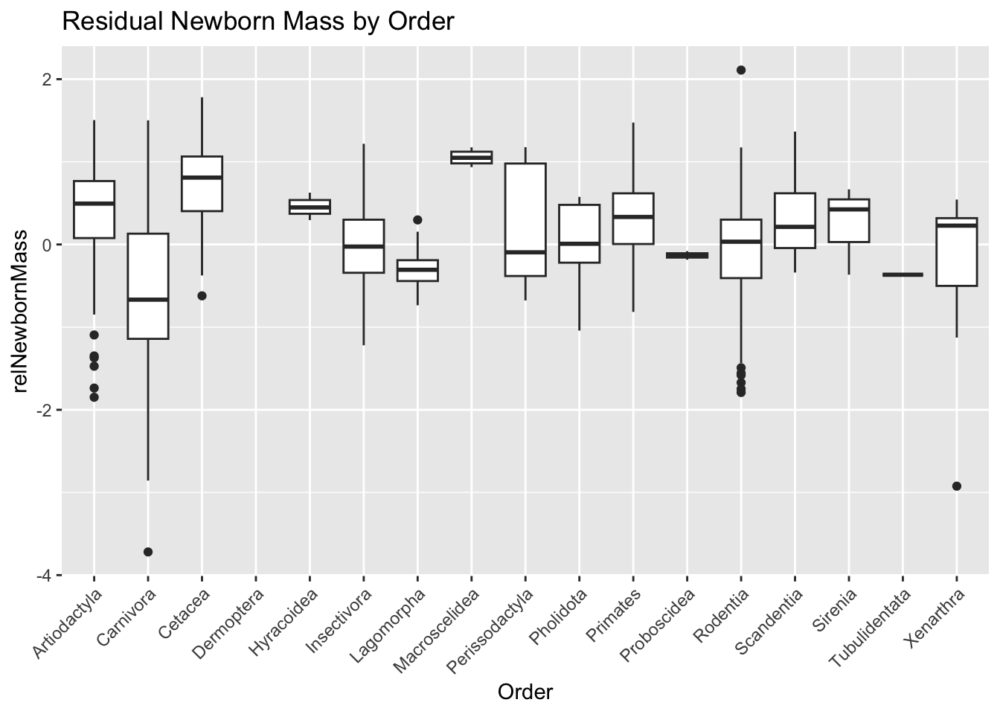
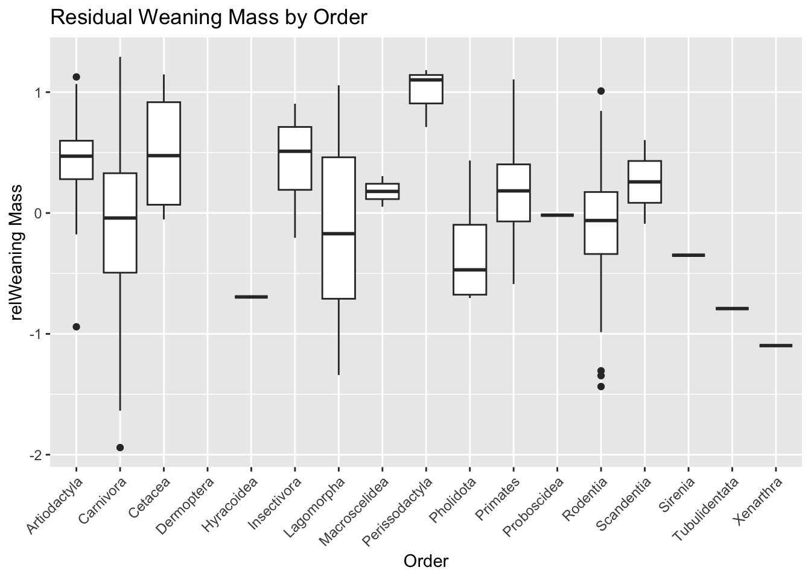
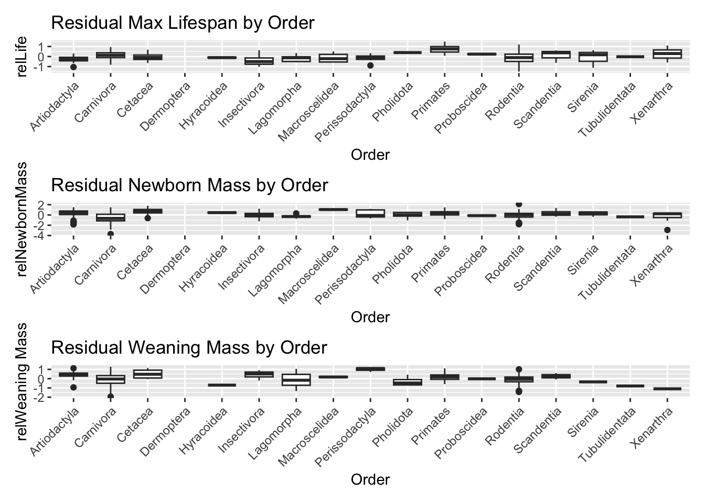
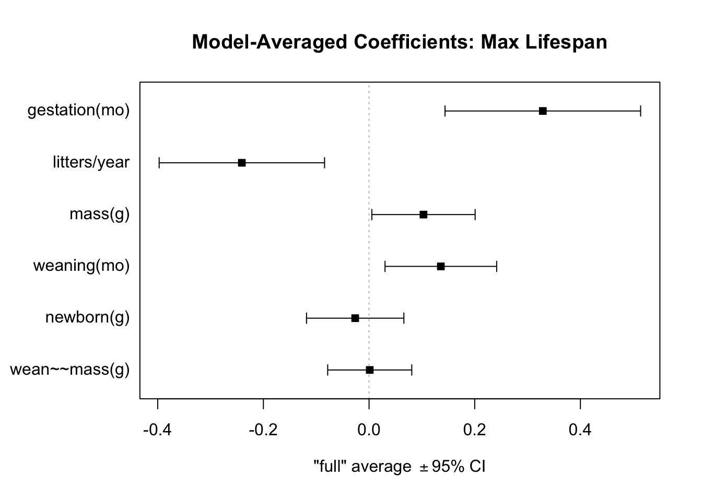

Rows: 1440 Columns: 14
── Column specification ────────────────────────────────────────────────────────
Delimiter: "\t"
chr (4): order, family, Genus, species
dbl (9): mass(g), gestation(mo), newborn(g), weaning(mo), wean mass(g), AFR(...
num (1): refs
ℹ Use `spec()` to retrieve the full column specification for this data.
ℹ Specify the column types or set `show_col_types = FALSE` to quiet this message.
skim(d)
Warning in attr(x, "align"): 'xfun::attr()' is deprecated.
Use 'xfun::attr2()' instead.
See help("Deprecated")
Warning in attr(x, "align"): 'xfun::attr()' is deprecated.
Use 'xfun::attr2()' instead.
See help("Deprecated")
Warning in attr(x, "align"): 'xfun::attr()' is deprecated.
Use 'xfun::attr2()' instead.
See help("Deprecated")
Data summary
Name
d
Number of rows
1440
Number of columns
14
_______________________
Column type frequency:
character
4
numeric
10
________________________
Group variables
None
Variable type: character
skim_variable
n_missing
complete_rate
min
max
empty
n_unique
whitespace
order
0
1
7
14
0
17
0
family
0
1
6
15
0
96
0
Genus
0
1
3
16
0
618
0
species
0
1
3
17
0
1191
0
Variable type: numeric
skim_variable
n_missing
complete_rate
mean
sd
p0
p25
p50
p75
p100
hist
mass(g)
0
1
3.835767e+05
5.055163e+06
-999
50
403.02
7009.17
1.490000e+08
▇▁▁▁▁
gestation(mo)
0
1
-2.872500e+02
4.553600e+02
-999
-999
1.05
4.50
2.146000e+01
▃▁▁▁▇
newborn(g)
0
1
6.703150e+03
9.091252e+04
-999
-999
2.65
98.00
2.250000e+06
▇▁▁▁▁
weaning(mo)
0
1
-4.271700e+02
4.967100e+02
-999
-999
0.73
2.00
4.800000e+01
▆▁▁▁▇
wean mass(g)
0
1
1.604893e+04
5.036502e+05
-999
-999
-999.00
10.00
1.907500e+07
▇▁▁▁▁
AFR(mo)
0
1
-4.081200e+02
5.049700e+02
-999
-999
2.50
15.61
2.100000e+02
▆▁▁▁▇
max. life(mo)
0
1
-4.902600e+02
6.153000e+02
-999
-999
-999.00
147.25
1.368000e+03
▇▁▅▁▁
litter size
0
1
-5.563000e+01
2.348800e+02
-999
1
2.27
3.84
1.418000e+01
▁▁▁▁▇
litters/year
0
1
-4.771400e+02
5.000300e+02
-999
-999
0.38
1.15
7.500000e+00
▇▁▁▁▇
refs
0
1
1.054762e+12
3.619709e+13
1
116
1229.00
1242249.75
1.368101e+15
▇▁▁▁▁
#There are 14 variables. Order, family, genus, and species are categorical variables.Mass, gestation, newborn, weaning, wean mass,AFR, ma,x.life, litter size, litter/year and refs are numeric variables/
STEP 1
#install.packages("naniar") library(naniar)
Attaching package: 'naniar'
The following object is masked from 'package:skimr':
n_complete
d <- d |>replace_with_na_all(condition =~ .x ==-999)colSums(is.na(d)) #check total missing values per variables
order family Genus species mass(g)
0 0 0 0 85
gestation(mo) newborn(g) weaning(mo) wean mass(g) AFR(mo)
418 595 619 1039 607
max. life(mo) litter size litters/year refs
841 84 689 0
STEP 2
d <- d |>select(-c(`litter size`, refs))glimpse(d)
library(ggplot2)library(patchwork)p1 <-ggplot(dlog, aes(x = order, y = relLife)) +geom_boxplot() +theme(axis.text.x =element_text(angle =45, hjust =1)) +labs(title ="Residual Max Lifespan by Order", y ="relLife", x ="Order")p1
Warning: Removed 848 rows containing non-finite outside the scale range
(`stat_boxplot()`).

p2 <-ggplot(dlog, aes(x = order, y = relNewbornMass)) +geom_boxplot() +theme(axis.text.x =element_text(angle =45, hjust =1)) +labs(title ="Residual Newborn Mass by Order", y ="relNewbornMass", x ="Order")p2
Warning: Removed 624 rows containing non-finite outside the scale range
(`stat_boxplot()`).

p3 <-ggplot(dlog, aes(x = order, y = relWeaningMass)) +geom_boxplot() +theme(axis.text.x =element_text(angle =45, hjust =1)) +labs(title ="Residual Weaning Mass by Order", y ="relWeaning Mass", x ="Order")p3
Warning: Removed 1044 rows containing non-finite outside the scale range
(`stat_boxplot()`).

p1 + p2 + p3 +plot_layout(ncol =1)
Warning: Removed 848 rows containing non-finite outside the scale range
(`stat_boxplot()`).
Warning: Removed 624 rows containing non-finite outside the scale range
(`stat_boxplot()`).
Warning: Removed 1044 rows containing non-finite outside the scale range
(`stat_boxplot()`).

#Primates have the highest residual lifespan.
#Macroscelidea has the highest residual newborn mass.
#Perissodactyla has the highest residual weaning mass.
Step 6
library(MuMIn) library(tidyverse)#dropna from variables for model predictorsd_winnow <-c("gestation(mo)", "newborn(g)", "weaning(mo)","wean mass(g)", "litters/year", "mass(g)")#max.life nodeld_life <- dlog |>drop_na(`max. life(mo)`, all_of(d_winnow))head(d_life)
Global model call: lm(formula = `max. life(mo)` ~ ., data = life_data, na.action = "na.fail")
---
Model selection table
(Int) `gst(mo)` `ltt/yer` `mss(g)` `wnn(mo)` df logLik AICc delta weight
40 3.999 0.2941 -0.2474 0.08592 0.1422 6 -126.072 264.6 0 1
Models ranked by AICc(x)
mods_afr[1, ]
Global model call: lm(formula = `AFR(mo)` ~ ., data = afr_data, na.action = "na.fail")
---
Model selection table
(Int) `gst(mo)` `ltt/yer` `mss(g)` `wnn(mo)` df logLik AICc delta weight
40 1.866 0.3515 -0.7312 0.05757 0.1444 6 -199.822 412 0 1
Models ranked by AICc(x)
#For the response variable max.life, the best model based on AICc included four predictors: gst(mo) (β = 0.2941), ltt/yer (β = -0.2474), mss(g) (β = 0.0859), wnn(mo) (β = 0.1422).This model AICc is 264.6, (delta = 0, weight =1).
#For the response variable AFR(mo), the best model based on AICc included the following predictors: gst(mo) (β = 0.3515), ltt/yer (β = -0.7312), mss(g) (β = 0.0576), wnn(mo) (β = 0.1444).This model AICc is 412, (delta = 0, weight =1).
#deltasum(mods_life$delta <4)
[1] 5
sum(mods_afr$delta <4)
[1] 7
#For the max.life, there are 5 models with delta AICc of 4 or less.
#For the AFR(mo), there are 7 models with delta AICc of 4 or less.
`gestation(mo)` `litters/year` `weaning(mo)` `mass(g)`
Sum of weights: 1.00 1.00 1.00 0.95
N containing models: 5 5 5 4
`newborn(g)` `wean mass(g)`
Sum of weights: 0.40 0.31
N containing models: 2 3
sw(avg_afr)
`gestation(mo)` `litters/year` `weaning(mo)` `mass(g)`
Sum of weights: 1.00 1.00 1.00 0.57
N containing models: 7 7 7 4
`wean mass(g)` `newborn(g)`
Sum of weights: 0.53 0.35
N containing models: 4 4
#For max. life(mo), the variables gestation(mo), litters/year, and weaning(mo) appeared in all of the top models, each with a sum of weights equal to 1.00. The variable mass(g) was included in most top models (weight = 0.95), while newborn(g) and wean mass(g) appeared less frequently, with weights of 0.40 and 0.31, respectively.
#For AFR(mo), the variables gestation(mo), litters/year, and weaning(mo) also appeared in all of the top models, with a sum of weights of 1.00. The variable mass(g) appeared in over half of the top models (weight = 0.57), as did wean mass(g) (weight = 0.53), while newborn(g) appeared less frequently (weight = 0.35).
plot(avg_life, full =TRUE, intercept =FALSE,main ="Model-Averaged Coefficients: Max Lifespan")

plot(avg_afr, full =TRUE, intercept =FALSE,main ="Model-Averaged Coefficients: AFR")